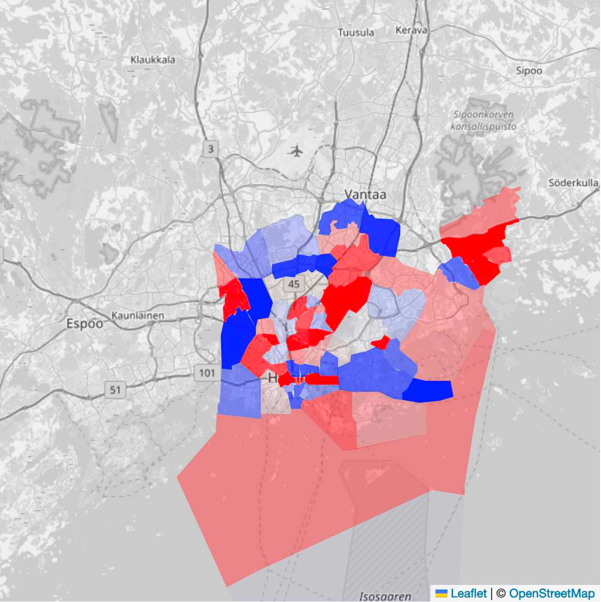

Data Science and Colours to the Rescue |
|
|  |
Using historical income data a dull map can be turned into a map showing which districts are becoming more affluent (red) and which are not changing much or are getting less affluent (blue). Suddenly a dull map is not just a dull map but a way to maximize real estate investments. Blah blah blah. Blah Blah blah. Blah Blah Blabla. |
| Back | |